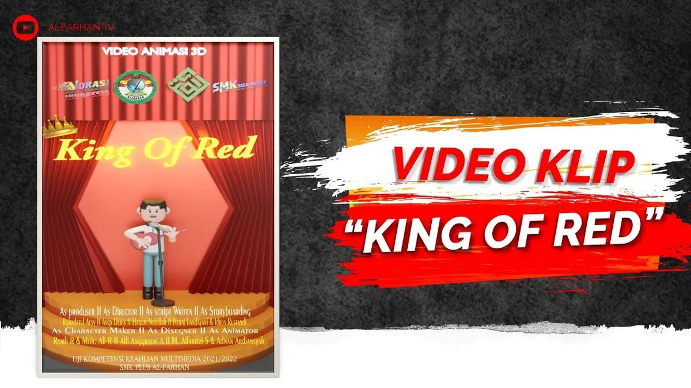

Video Klip “King of Red”
Sebagai Produser, saya mengatur jadwal agar proyek berjalan maksimal, mengelola keuangan, dan mengawasi pekerjaan seluruh anggota tim dari awal hingga video klip ini selesai.
- Produser
- Manajemen waktu
- Anggaran
- Film terbaik pilihan sosmed 2022